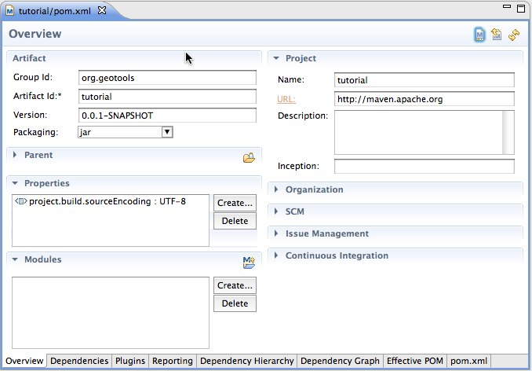
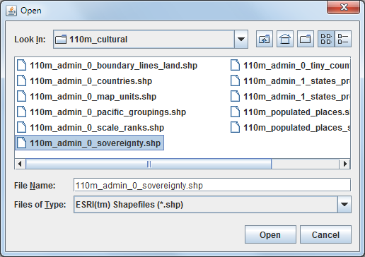
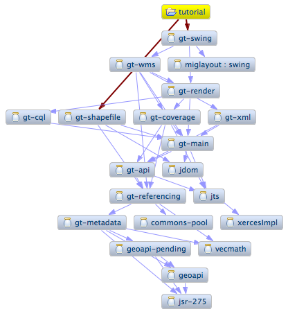
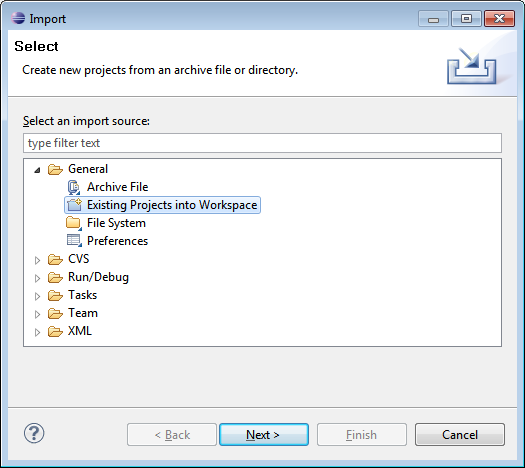
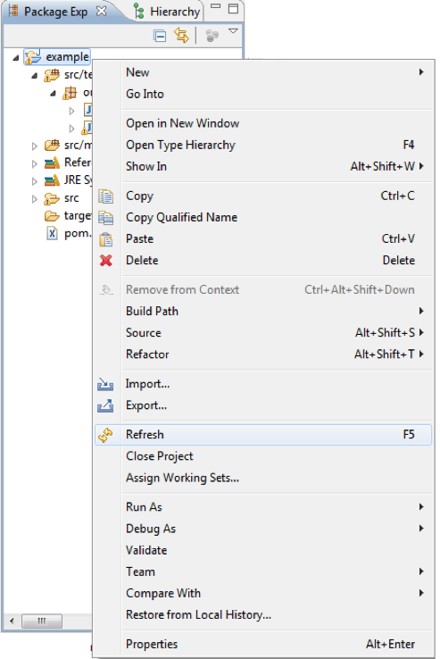

Eclipse Quickstart¶
Welcome Eclipse Developers¶
Welcome to Geospatial for Java. This workbook is aimed at Java developers who are new to geospatial and would like to get started.
We are going to start out carefully with the steps needed to set up your Eclipse IDE. This workbook is also available for NetBeans or Maven command line use. If you are comfortable with the build tool Maven, it is our preferred option for downloading and managing jars but we will also document how to set up things by hand.
These are visual tutorials that allows you to see what you are working with while you learn. These examples make use of Swing; be assured that this is only to make the examples easy and fun to use. These sessions are applicable to both server side and client side development.
Java Install¶
We are going to be making use of Java, so if you don’t have a Java Development Kit installed now is the time to do so. Even if you have Java installed already check out the optional Java Advanced Imaging and Java Image IO section.
Download the latest Java Developer Kit (JDK) from the the java.sun.com website:
At the time of writing the latest JDK was:
jdk-7u1-windows-i586.exe
Click through the installer. You will need to accept a license agreement, choose a directory and so forth.
By default this will install to:
C:\Program Files\Java\jdk1.7.0\
Optional: Java Advanced Imaging is used by GeoTools for raster support. If you install JAI 1.1.3 performance will be improved:
http://download.java.net/media/jai/builds/release/
Both a JDK and JRE installer are available:
- jai-1_1_3-lib-windows-i586-jdk.exe
- jai-1_1_3-lib-windows-i586-jre.exe
Optional: ImageIO Is used to read and write raster files. GeoTools uses version 1_1 of the ImageIO library:
http://download.java.net/media/jai-imageio/builds/
Both a JDK and JRE installer are available:
- jai_imageio-1_1-lib-windows-i586-jdk.exe
- jai_imageio-1_1-lib-windows-i586-jre.exe
Eclipse¶
Eclipse is a popular integrated development environment most often used for all kinds of Java development. For this tutorial we are doing straight up Java programming using the smallest download available - if you already have an Eclipse download please go ahead and use it and switch to the “Java Perspective”.
Visit the Eclipse download page (http://www.eclipse.org/downloads/) and download “Eclipse IDE for Java developers”.
At the time of writing the latest release was:
- eclipse-java-indigo-SR1-win32.zip
Eclipse does not provide an installer, just a directory to unzip and run.
To start out with create the folder C:\java to keep all our java development in one spot.
Unzip the downloaded eclipse-java-indigo-win32.zip file to your C:\java directory - the folder C:\java\eclipse will be created.
Navigate to C:\java\eclipse and right-click on the eclipse.exe file and select Send To -> Desktop (create shortcut).
Open up the eclipse.ini file.
- Use our JDK directly by providing a -vm argument
- Optional: If you have lots of memory for development consider -Xmx756m
-startup
plugins/org.eclipse.equinox.launcher_1.1.0.v20100507.jar
--launcher.library
plugins/org.eclipse.equinox.launcher.win32.win32.x86_1.1.0.v20100503
-product
org.eclipse.epp.package.java.product
--launcher.defaultAction
openFile
--launcher.XXMaxPermSize
256M
-showsplash
org.eclipse.platform
--launcher.XXMaxPermSize
256m
--launcher.defaultAction
openFile
-vm
C:\Program Files\Java\jdk1.6.0_20\bin
-vmargs
-Dosgi.requiredJavaVersion=1.5
-Xms40m
-Xmx756m
Double click on your desktop shortcut to start up eclipse.
When you start up eclipse for the first time it will prompt you for a workspace. To keep our java work in one spot you can type in:
C:\java\workspace
On the Welcome view press Workbench along the right hand side and we can get started
M2Eclipse¶
Maven is a build system for Java which is very good at managing dependencies. The GeoTools library is plugin based and you get to pick and choose what features you need for your application. While this is useful when determining just what is needed for delivery - it can be a pain to manage by hand so we encourage the use of a tool such as maven.
In previous years we used the command line (gasp!) when working with maven. This year we are going to be using the M2Eclipse plugin from Sonyatype.
The M2Eclipse plugin is included by default in Eclipse 3.7.
Quickstart¶
For this Quickstart we are going to produce a simple maven project, hook it up to GeoTools, and then display a shapefile.
This tutorial is really focused on your development environment and making sure you have GeoTools ready to go. We will cover what a shapefile is and how the map is displayed shortly.
Creating a Simple Maven project¶
Maven works by asking you to describe your project, the name, the version number, where the source code is, how you want it packaged, and what libraries it makes use of. Based on the description it can figure out most things: how to compile your code, creating javadocs, or even downloading the library jars for you.
To use M2Eclipse plugin to create a create a new maven project:
File > New > Other from the menu bar
Select the wizard Maven > Maven Project and press Next to open the New Maven Project wizard
The New Maven project page defaults are fine, press Next
The default of maven-archtype-quickstart is fine, press Next
The archtype acts a template using the parameters we supply to create the project.
- Group Id: org.geotools
- Artifact Id: tutorial
- Version: 0.0.1-SNAPSHOT (default)
- Package: org.geotools.tutorial
Press Finish to create the new project.
You can see that an application has been created; complete with App.java and a JUnit test case
Open up src/main/java and select org.geotools.tutorial.App and press the Run button in the toolbar:
Hello World!
You may also open up src/main/test and run org.geotools.tutorial.AppTest as a JUnit Test.
{kind=link}
{kind=link}
{kind=link}
Adding Jars to your Project¶
The pom.xml file is used to describe the care and feeding of your maven project; we are going to focus on the dependencies needed for your project
When downloading jars maven makes use of a “local repository” to store jars.
PLATFORM LOCAL REPOSITORY Windows XP: C:\Documents and Settings\You\.m2\repositoryWindows: C:\Users\You\.m2repositoryLinux and Mac: ~/.m2/repository
To download jars maven makes use of public maven repositories on the internet where projects such as GeoTools publish their work.
Open up
pom.xmlin your new project. You can see some of the information we entered earlier.This editor allows you to describe all kinds of things; in the interest of time we are going to skip the long drawn out explanation and ask you to click on the pom.xml tab.
To make use of GeoTools we are going to add three things to this pom.xml file.
At the top after moduleVersion add a properties element defining the version of GeoTools we want to use. This workbook was written for 13-SNAPSHOT although you may wish to try a different version.
For production a stable release is recommended:
<properties> <project.build.sourceEncoding>UTF-8</project.build.sourceEncoding> <geotools.version>12-RC1</geotools.version> </properties>
To make use of a nightly build set the geotools.version property to 13-SNAPSHOT .
<properties> <project.build.sourceEncoding>UTF-8</project.build.sourceEncoding> <!-- use the latest snapshot --> <geotools.version>13-SNAPSHOT</geotools.version> </properties>
We are going to add a dependence to GeoTools
gt-mainandgt-swingjars. Note we are making use of the geotools.version defined above.
{kind=link}
<dependencies>
<dependency>
<groupId>junit</groupId>
<artifactId>junit</artifactId>
<version>4.11</version>
<scope>test</scope>
</dependency>
<dependency>
<groupId>org.geotools</groupId>
<artifactId>gt-shapefile</artifactId>
<version>${geotools.version}</version>
</dependency>
<dependency>
<groupId>org.geotools</groupId>
<artifactId>gt-swing</artifactId>
<version>${geotools.version}</version>
</dependency>
</dependencies>
Finally we need to list the external repositories where maven can download GeoTools and and other required jars from.
<repositories> <repository> <id>maven2-repository.dev.java.net</id> <name>Java.net repository</name> <url>http://download.java.net/maven/2</url> </repository> <repository> <id>osgeo</id> <name>Open Source Geospatial Foundation Repository</name> <url>http://download.osgeo.org/webdav/geotools/</url> </repository> </repositories>
If you are using a nightly build (such as 13-SNAPSHOT) and add a reference to the snapshot repository.
<repositories> <repository> <id>maven2-repository.dev.java.net</id> <name>Java.net repository</name> <url>http://download.java.net/maven/2</url> </repository> <repository> <id>osgeo</id> <name>Open Source Geospatial Foundation Repository</name> <url>http://download.osgeo.org/webdav/geotools/</url> </repository> <repository> <snapshots> <enabled>true</enabled> </snapshots> <id>boundless</id> <name>Boundless Maven Repository</name> <url>http://repo.boundlessgeo.com/main</url> </repository> </repositories>
For comparison here is the completed
pom.xmlfile for download.You may find cutting and pasting to be easier than typing, you can choose Source –> Format to fix indentation
Tips:
- If maven has trouble downloading any jar; you can try again by selecting Project ‣ Update All Maven Dependencies.
- If the dependencies do not update automatically use Project ‣ Clean
Quickstart Application¶
Now that your environment is setup we can put together a simple Quickstart. This example will display a shapefile on screen.
Create the package org.geotools.tutorial.quickstart using your IDE.
Create the org.geotools.tutorial.quickstart.Quickstart class using your IDE.
Fill in the following code:
{kind=link}
package org.geotools.tutorial.quickstart; import java.io.File; import org.geotools.data.FileDataStore; import org.geotools.data.FileDataStoreFinder; import org.geotools.data.simple.SimpleFeatureSource; import org.geotools.map.FeatureLayer; import org.geotools.map.Layer; import org.geotools.map.MapContent; import org.geotools.styling.SLD; import org.geotools.styling.Style; import org.geotools.swing.JMapFrame; import org.geotools.swing.data.JFileDataStoreChooser; /** * Prompts the user for a shapefile and displays the contents on the screen in a map frame. * <p> * This is the GeoTools Quickstart application used in documentationa and tutorials. * */ public class Quickstart { /** * GeoTools Quickstart demo application. Prompts the user for a shapefile and displays its * contents on the screen in a map frame */ public static void main(String[] args) throws Exception { // display a data store file chooser dialog for shapefiles File file = JFileDataStoreChooser.showOpenFile("shp", null); if (file == null) { return; } FileDataStore store = FileDataStoreFinder.getDataStore(file); SimpleFeatureSource featureSource = store.getFeatureSource(); // Create a map content and add our shapefile to it MapContent map = new MapContent(); map.setTitle("Quickstart"); Style style = SLD.createSimpleStyle(featureSource.getSchema()); Layer layer = new FeatureLayer(featureSource, style); map.addLayer(layer); // Now display the map JMapFrame.showMap(map); } }
We need to download some sample data to work with. The http://www.naturalearthdata.com/ project is a great project supported by the North American Cartographic Information Society. Head to the link below and download some cultural vectors. You can use the ‘Download all 50m cultural themes’ at top.
Please unzip the above data into a location you can find easily such as the desktop.
Run the application to open a file chooser. Choose a shapefile from the example dataset.
The application will connect to your shapefile, produce a map content, and display the shapefile.

A couple of things to note about the code example:
{kind=link}
- The shapefile is not loaded into memory - instead it is read from disk each and every time it is needed This approach allows you to work with data sets larger than available memory.
- We are using a very basic display style here that just shows feature outlines. In the examples that follow we will see how to specify more sophisticated styles.
Things to Try¶
Each tutorial consists of very detailed steps followed by a series of extra questions. If you get stuck at any point please ask your instructor; or sign up to the geotools-users email list.
Here are some additional challenges for you to try:
Try out the different sample data sets
You can zoom in, zoom out and show the full extents and Use the select tool to examine individual countries in the sample countries.shp file
Download the largest shapefile you can find and see how quickly it can be rendered. You should find that the very first time it will take a while as a spatial index is generated. After that performance should be very good when zoomed in.
Performance: We know that one of the ways people select a spatial library is based on speed. By design GeoTools does not load the above shapefile into memory (instead it streams it off of disk each time it is drawn using a spatial index to only bring the content required for display).
If you would like to ask GeoTools to cache the shapefile in memory try the following code:
/** * This method demonstrates using a memory-based cache to speed up the display (e.g. when * zooming in and out). * * There is just one line extra compared to the main method, where we create an instance of * CachingFeatureStore. */ public static void main(String[] args) throws Exception { // display a data store file chooser dialog for shapefiles File file = JFileDataStoreChooser.showOpenFile("shp", null); if (file == null) { return; } FileDataStore store = FileDataStoreFinder.getDataStore(file); SimpleFeatureSource featureSource = store.getFeatureSource(); // CachingFeatureSource is deprecated as experimental (not yet production ready) CachingFeatureSource cache = new CachingFeatureSource(featureSource); // Create a map content and add our shapefile to it MapContent map = new MapContent(); map.setTitle("Using cached features"); Style style = SLD.createSimpleStyle(featureSource.getSchema()); Layer layer = new FeatureLayer(cache, style); map.addLayer(layer); // Now display the map JMapFrame.showMap(map); }
For the above example to compile hit
Control-Shift-Oto organise imports; it will pull in the following import:import org.geotools.data.CachingFeatureSource;
Note
When building you may see a message that CachingFeatureSource is deprecated. It’s ok to ignore it, it’s just a warning. The class is still under test but usable.
- Try and sort out what all the different “side car” files are - and what they are for. The sample data set includes “shp”, “dbf” and “shx”. How many other side car files are there?
- Advanced: The use of FileDataStoreFinder allows us to work easily with files. The other way to do things is with a map of connection parameters. This techniques gives us a little more control over how we work with a shapefile and also allows us to connect to databases and web feature servers.
File file = JFileDataStoreChooser.showOpenFile("shp", null);
Map<String,Object> params = new HashMap<String,Object>();
params.put( "url", file.toURI().toURL() );
params.put( "create spatial index", false );
params.put( "memory mapped buffer", false );
params.put( "charset", "ISO-8859-1" );
DataStore store = DataStoreFinder.getDataStore( params );
SimpleFeatureSource featureSource = store.getFeatureSource( store.getTypeNames()[0] );
Important: GeoTools is an active open source project - you can quickly use maven to try out the latest nightly build by changing your pom.xml file to use a “SNAPSHOT” release.
At the time of writing 13-SNAPSHOT is under active development.
<properties> <project.build.sourceEncoding>UTF-8</project.build.sourceEncoding> <!-- use the latest snapshot --> <geotools.version>13-SNAPSHOT</geotools.version> </properties>
You will also need to change your pom.xml file to include the following snapshot repository:
<repositories>
<repository>
<id>maven2-repository.dev.java.net</id>
<name>Java.net repository</name>
<url>http://download.java.net/maven/2</url>
</repository>
<repository>
<id>osgeo</id>
<name>Open Source Geospatial Foundation Repository</name>
<url>http://download.osgeo.org/webdav/geotools/</url>
</repository>
<repository>
<snapshots>
<enabled>true</enabled>
</snapshots>
<id>boundless</id>
<name>Boundless Maven Repository</name>
<url>http://repo.boundlessgeo.com/main</url>
</repository>
</repositories>
So what jars did maven actually use for the Quickstart application? Open up your
pom.xmland switch to the dependency heirarchy or dependency graph tabs to see what is going on.We will be making use of some of the project in greater depth in the remaining tutorials.
{kind=link}
Alternatives to M2Eclipse¶
There are two alternatives to the use of the M2Eclipse plugin; you may find these better suit the needs of your organisation.
Maven Plugin¶
The first alternative to putting maven into eclipse is to put eclipse into maven.
The maven build tool also works directly on the command line; and includes a plugin for
generating eclipse .project and .classpath files.
Download Maven from http://maven.apache.org/download.html
The last version we tested with was: Maven 2.2.1
Unzip the file apache-maven-2.2.1-bin.zip to C:javaapache-maven-2.2.1
You need to have a couple of environmental variables set for maven to work. Use Control Panel ‣ System ‣ Advanced ‣ Environmental Variables to set the following.
- JAVA_HOME =
C:Program FilesJavajdk1.6.0_16 - M2_HOME =
C:javaapache-maven-2.2.1 - PATH =
%JAVA_HOME%bin;%M2_HOME%bin
- JAVA_HOME =
Open up a commands prompt Accessories ‣ Command Prompt
Type the following command to confirm you are set up correctly:
C:java> mvn -version
This should produce the following output
We can now create our project with:
C:>cd C:\java C:java> mvn archetype:create -DgroupId=org.geotools -DartifactId=tutorial
And ask for our project to be set up for eclipse:
C:java> cd tutorial C:java\tutorial> mvn eclipse:eclipse
You can now give Eclipse the background information it needs to talk to your “maven repository” (maven downloaded something like 30 jars for you)
Return to Eclipse
Use Windows ‣ Preferences to open the Preference Dialog. Using the tree on the left navigate to the Java > Build path > Classpath Variables preference Page.
{kind=link}
{kind=link}
{kind=link}
Add an M2_REPO classpath variable pointing to your “local repository”
PLATFORM LOCAL REPOSITORY Windows XP: C:\Documents and Settings\Jody\.m2\repositoryWindows: C:\Users\Jody.m2\repositoryLinux and Mac: ~/.m2/repositoryWe can now import your new project into eclipse using File ‣ Import
Choose Existing Projects into Workspace from the list, and press Next
Select the project you created:
C:javatutorialPress Finish to import your project
Navigate to the pom.xml file and double click to open it up.
We are going to start by defining the version number of GeoTools we wish to use. This workbook was written for 13-SNAPSHOT although you may wish to try a newer version, or make use of a nightly build by using 8-SNAPSHOT.
{kind=link}
<properties>
<project.build.sourceEncoding>UTF-8</project.build.sourceEncoding>
<geotools.version>12-RC1</geotools.version>
</properties>
- The following dependencies:
<dependencies>
<dependency>
<groupId>junit</groupId>
<artifactId>junit</artifactId>
<version>4.11</version>
<scope>test</scope>
</dependency>
<dependency>
<groupId>org.geotools</groupId>
<artifactId>gt-shapefile</artifactId>
<version>${geotools.version}</version>
</dependency>
<dependency>
<groupId>org.geotools</groupId>
<artifactId>gt-swing</artifactId>
<version>${geotools.version}</version>
</dependency>
</dependencies>
- Finally several repositories to download from:
<repositories>
<repository>
<id>maven2-repository.dev.java.net</id>
<name>Java.net repository</name>
<url>http://download.java.net/maven/2</url>
</repository>
<repository>
<id>osgeo</id>
<name>Open Source Geospatial Foundation Repository</name>
<url>http://download.osgeo.org/webdav/geotools/</url>
</repository>
</repositories>
You may find it easier to cut and paste into your existing file; or just
download pom.xmldirectly.An easy way to pick up typing mistakes with tags is to Eclipse to format the xml file.
Return to the command line and maven to download the required jars and tell eclipse about it:
C:\java\example> mvn eclipse:eclipse
Return to eclipse and select the project folder. Refresh your project using the context menu or by pressing
F5. If you open up referenced libraries you will see the required jars listed.Using this technique of running mvn eclipse:eclipse and refreshing in eclipse you can proceed through all the tutorial examples.
{kind=link}
Download GeoTools¶
We can also download the GeoTools project bundle from source forge and set up our project to use them. Please follow these steps carefully as not all the GeoTools jars can be used at the same time.
Download the GeoTools binrary release from http://sourceforge.net/projects/geotools/files
We are now going to make a project for the required jars. By placing the jars into their own project is is easier to upgrade GeoTools.
Select File > New > Java Project to open the New Java Project wizard
Type in “GeoTools Download” as the name of the project and press Finish.
Choose File > Import to open the Import Wizard.
Select General > Archive File and press Next
Navigate to the geotools-bin.zip download and import the contents into your project.
GeoTools includes a copy of the “EPSG” database; but also allows you to hook up your own copy of the EPSG database as an option..
However only one copy can be used at a time so we will need to remove the following jars from the Library Manager:
- gt-epsg-h2
- gt-epsg-oracle
- gt-epsg-postgresql
- gt-epsg-wkt
GeoTools allows you to work with many different databases; however to make them work you will need to download jdbc drivers from the manufacturer.
For now remove the follow plugins from your Library Manager definition:
- gt-arcsde
- gt-arcsde-common
- gt-db2
- gt-jdbc-db2
- gt-oracle-spatial
- gt-jdbc-oracle
Next we update our java build path to include the remaining jars. Choose Project > Properties from the menu bar
Select Java Build Path property page; and switch to the library tab.
Press Add JARs button and add all the jars
Switch to the Order and Export tab and press Select All
We can now create a new Example project to get going on our Example.
Use Project > Properties on your new Example project to open up the Java Build Path page.
Switch to the Projects tab and use the Add.. button to add GeoTools Downloads to the build path.
Our example project can now use all the GeoTools jars.
Please proceed to the Quickstart.